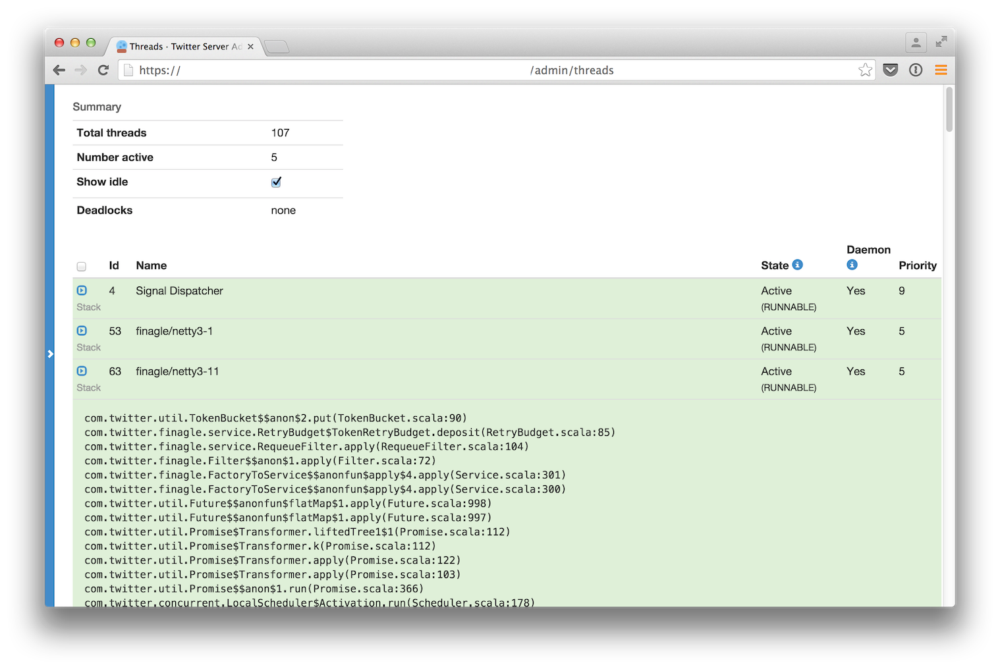
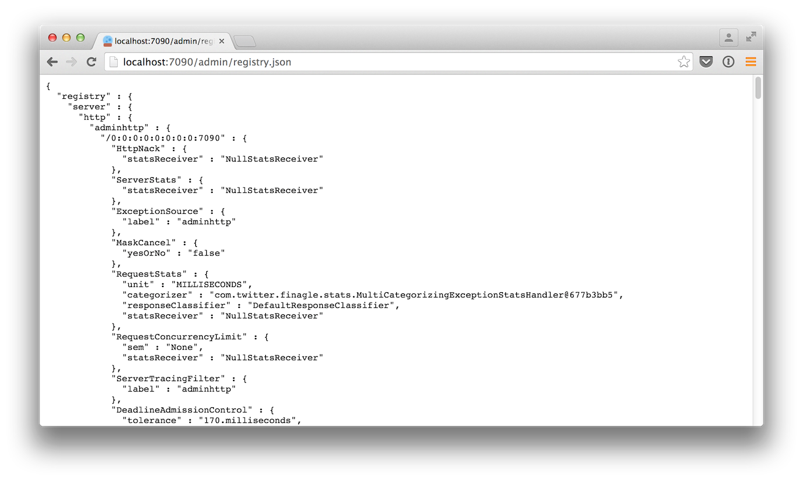
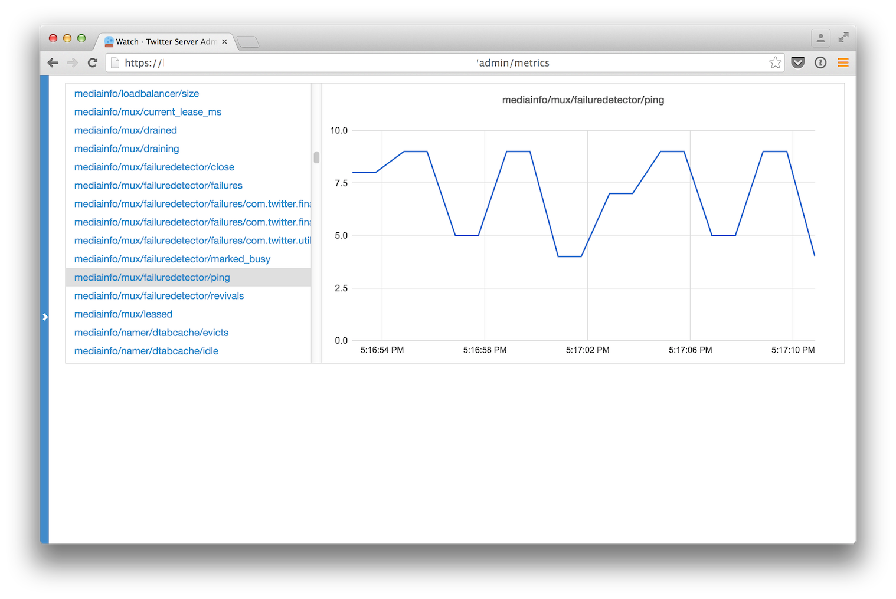

HTTP Admin interface¶
TwitterServer starts an HTTP server and includes a variety of tools for diagnostics, profiling, and more. It binds to the port defined by the flag -admin.port and uses port 9990 by default.
Visit /admin on your service’s admin port in a web browser to see what is available.

TwitterServer defines a series of default endpoints grouped into a variety of categories.
Process Info¶
Endpoints that provide insights into your service’s configuration and usage.
/admin/lint¶
Runs and displays the results for all registered linters to check for various service issues. This can help you identify misuse or abuse of functionality.

/admin/threads¶
A user interface for capturing the current stacktraces. Includes filtering of inactive threads as well as deadlock detection. JSON output is also available through tools like curl via the inspection of the HTTP Accept header.
/admin/registry.json¶
Displays how the service is currently configured across a variety of dimensions including the client stack, server stack, flags, service loader values, system properties, environment variables, build properties and more.
The HTTP request parameter filter allows for simple filtering of the returned data. The value takes the form “path/to/data” and returns registry entries whose prefix matches the parameter. A glob, *, can be used to match any component of the path. For example, using “filter=registry/server/http” will output all Finagle Http servers. Using “filter=registry/client/*/user_service” would output all Finagle clients with a label of “user_service” regardless of protocol.
Due to the usage of / as a delimiter, it means you cannot match components containing a /. The choice of * as a glob also means you cannot match registry components with the exact value of *. For these use cases, there is the more powerful jq command-line JSON processing tool.
/admin/balancers.json¶
Shows details about client load balancers, including both configuration and current status.
The HTTP request parameter label allows for filtering down to a client whose label matches that.
Example JSON output:
{
"clients" : [
{
"label" : "cool_service",
"info" : {
"balancer_class" : "P2CLeastLoaded",
"size" : 1,
"total_pending" : 0,
"number_available" : 1,
"number_busy" : 0,
"additional_info" : { },
"status" : "Open",
"number_closed" : 0,
"total_load" : 0.0
}
}
]
}
/admin/server_info¶
Return build information about this server. See /admin/registry.json for this in addition to other details.
{
"name" : "myserver",
"version" : "1.0.0-SNAPSHOT",
"build" : "20130221-105425",
"build_revision" : "694299d640d337c58fadf668e44322b17fd0562e",
"build_branch_name" : "refs/heads/twitter-server!doc",
"build_last_few_commits" : [
"694299d (HEAD, origin/twitter-server!doc, twitter-server!doc) Merge branch 'master' into twitter-server!doc",
"ba1c062 Fix test for sbt + Jeff's comments",
],
"start_time" : "Thu Feb 21 13:43:32 PST 2013",
"uptime" : 22458
}
/admin/announcer¶
Returns a set of announcement chains that have run through the Announcer. This allows one to see how a particular target is being announced.
Utilities¶
Endpoints that cover various utilities that developers can manipulate at runtime.
/admin/tracing¶
Enable (/admin/tracing?enable=true) or disable tracing (/admin/tracing?disable=true)
See zipkin documentation for more info regarding tracing.
/admin/logging¶
Display the set of loggers and their current log level. The level of each logger can also be modified on-the-fly.

/admin/toggles¶
See and modify the server’s in-memory mutable com.twitter.finagle.toggle.Toggles.
GET requests show the current state of all StandardToggleMap StandardToggleMaps. Requests should be of the form /admin/toggles{/$libraryName}{/$id}. Note that the library name and toggle id components are optional and allow for filtering the output on those constraints. The output is JSON and it looks roughly like:
{
"libraries": [
{
"libraryName" : "$libraryName",
"toggles" : [
{
"current" : {
"id" : "$id",
"fraction" : $fraction,
"description" : "$description"
},
"components" : [
{
"source" : "$ToggleMapSource",
"fraction" : $fraction
},
{ <other sources here> }
]
},
{ <other toggles here> }
]
},
{ <other libraries here> }
]
}
There will be a hash for each library registered with com.twitter.finagle.toggle.StandardToggleMap. For each Toggle the “current” hash shows the current configuration while the “components” array has a hash per ToggleMap source. These are ordered by evaluation order and as such, sources earlier in a component array are used first.
PUT requests allow for updates/creation of the mutable Toggles while DELETE requests allow for removal. These apply only to the ToggleMap.Mutable ToggleMaps within a StandardToggleMap. Requests must be of the form /admin/toggles/$libraryName/$id. For create and update, and an additional fraction request parameter must be set as well.
/admin/tunables¶
See and modify the server’s in-memory mutable com.twitter.util.tunable.Tunables.
GET requests to /admin/tunables show the current state of all registered StandardTunableMap StandardTunableMaps. The returned JSON is of the form:
[
{
"id" : "$id",
"tunables" : [
{
"id" : "$tunableId",
"value" : "$value",
"components" : [
{
"source" : "$TunableMapSource",
"value" : "$value"
},
{ <other components here> }
]
},
{ <other tunables here> }
]
},
{ <other ids here> }
]
GET requests to /admin/tunables/$id show the current state of the StandardTunableMap registered for $id.
PUT and DELETE requests to /admin/tunables/$id update the in-memory Tunables for $id and should have a JSON body in the same format as a Tunable configuration file, detailed in JsonTunableMapper:
{
"tunables":
[
{
"id" : "$tunableId",
"value" : $value,
"type" : "$class"
},
{ <other updates here> }
]
}
For a PUT request, these Tunables will be updated or added. Note that PUT requests will not cause any existing Tunables to be removed.
For a DELETE request, these Tunables will cleared from the TunableMap. The Tunables are keyed by “id” and “type”; the “value” for each of Tunables to delete can be any valid value for this Tunable. Because the value of a Tunable is the result of a composition of TunableMaps (see StandardTunableMap), deleting an in-memory Tunable will cause the value from the composition of the other TunableMaps to be used.
Metrics¶
Endpoints regarding your service’s metrics. The Finagle User Guide explains what many of them represent.
/admin/metrics¶
Watch specific metrics in real-time.
/admin/metrics.json¶
Export a snapshot of the current statistics of the program. You can use the StatsReceiver in your application for add new counters/gauges/histograms, simply use the statsReceiver variable provided by TwitterServer.
This endpoint is available when you are using the finagle-stats library. See the metrics section for more information.
/admin/histograms¶
Visualize and download histogram-style metrics. The metrics endpoint exposes a summary of the histogram, but it doesn’t expose the full histogram. The full histogram can be useful for seeing the different modes of your metric, which often represent different states of your program.
This endpoint is available when you are using the finagle-stats library. See the metrics section for more information.
For more details, please see the features documentation.

/admin/histograms.json¶
Export a snapshot of a histogram-style metric in json. This exports the entire histogram, which can be used for correctly aggregating over a cluster, or to efficiently record historic histogram data, or to compare modes in different usages patterns, like times of day. You may add new histograms by adding new stats to your statsReceiver variable.
This endpoint is available when you are using the finagle-stats library. See the metrics section for more information.
Profiling¶
Endpoints for profiling your process.
/admin/pprof/contention¶
Returns a CPU contention profile which identifies blocked threads (Thread.State.BLOCKED). The output is in pprof format. The process will be profiled for 10 seconds at a frequency of 100 hz. These values can be controlled via HTTP request parameters seconds and hz respectively.
/admin/contention¶
Show call stacks of blocked and waiting threads.
$ curl localhost:9990/admin/contention
Blocked:
"util-jvm-timer-1" Id=11 TIMED_WAITING on java.util.concurrent.locks.AbstractQueuedSynchronizer$ConditionObject@33aac3c
at sun.misc.Unsafe.park(Native Method)
- waiting on java.util.concurrent.locks.AbstractQueuedSynchronizer$ConditionObject@33aac3c
at java.util.concurrent.locks.LockSupport.parkNanos(LockSupport.java:226)
at java.util.concurrent.locks.AbstractQueuedSynchronizer$ConditionObject.awaitNanos(AbstractQueuedSynchronizer.java:2082)
at java.util.concurrent.ScheduledThreadPoolExecutor$DelayedWorkQueue.take(ScheduledThreadPoolExecutor.java:1090)
at java.util.concurrent.ScheduledThreadPoolExecutor$DelayedWorkQueue.take(ScheduledThreadPoolExecutor.java:807)
at java.util.concurrent.ThreadPoolExecutor.getTask(ThreadPoolExecutor.java:1043)
at java.util.concurrent.ThreadPoolExecutor.runWorker(ThreadPoolExecutor.java:1103)
at java.util.concurrent.ThreadPoolExecutor$Worker.run(ThreadPoolExecutor.java:603)
...
/admin/pprof/profile¶
Returns a CPU usage profile. The output is in pprof format. The process will be profiled for 10 seconds at a frequency of 100 hz. These values can be controlled via HTTP request parameters seconds and hz respectively.
$ curl -s localhost:9990/admin/pprof/profile > /tmp/cpu_profiling
$ pprof --text /tmp/cpu_profiling
Using local file /tmp/cpu_profiling.
Using local file /tmp/cpu_profiling.
Total: 83 samples
17 20.5% 20.5% 24 28.9% com.twitter.finagle.ProxyServiceFactory$class.status
8 9.6% 30.1% 10 12.0% scala.collection.immutable.HashMap$HashTrieMap.updated0
5 6.0% 36.1% 70 84.3% scala.collection.Iterator$class.foreach
5 6.0% 42.2% 5 6.0% scala.runtime.ScalaRunTime$.hash
4 4.8% 47.0% 4 4.8% com.twitter.finagle.transport.Transport$$anon$2.status
4 4.8% 51.8% 4 4.8% sun.management.OperatingSystemImpl.getOpenFileDescriptorCount
3 3.6% 55.4% 9 10.8% com.twitter.finagle.Filter$$anon$2.status
...
/admin/pprof/heap¶
Returns a heap profile computed by the heapster agent. The output is in pprof format.
$ java -agentlib:heapster -jar target/myserver-1.0.0-SNAPSHOT.jar
$ pprof /tmp/heapster_profile
Welcome to pprof! For help, type 'help'.
(pprof) top
Total: 2001520 samples
2000024 99.9% 99.9% 2000048 99.9% LTest;main
1056 0.1% 100.0% 1056 0.1% Ljava/lang/Object;
296 0.0% 100.0% 296 0.0% Ljava/lang/String;toCharArray
104 0.0% 100.0% 136 0.0% Ljava/lang/Shutdown;
Downstream Clients¶
The Finagle clients that your service depends on.
/admin/clients¶
Surface client information exposed by Finagle. Per-client configuration parameters and values for each module are available at /admin/clients/<client name>.
Listening Servers¶
The Finagle servers that your service is running.
/admin/servers¶
Surface server information exposed by Finagle. Per-server configuration parameters and values for each module are available at /admin/clients/<client name>.